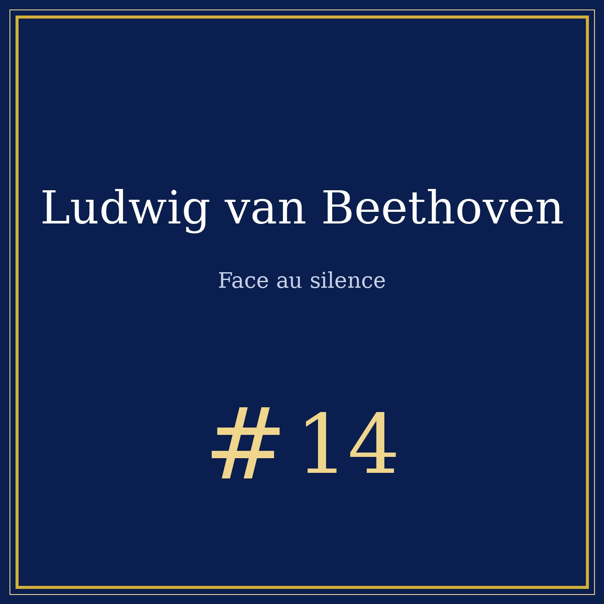
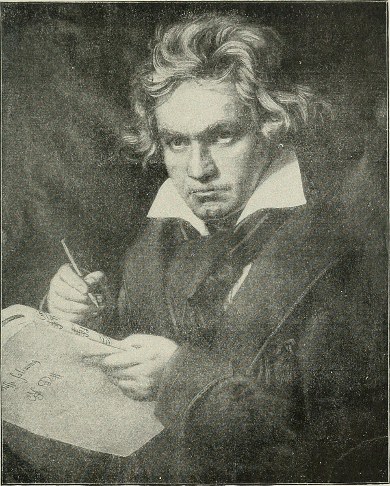

Portrait n°14 — le compositeur qui n'entendait plus la musique du monde
Œuvre de fiction radiophonique et biographique à caractère historique et patrimonial. Les faits présentés dans cet article sont réels et sourcés ; l'entretien est une reconstitution imaginée.


Écoutez le portrait : Beethoven face au silence, 14 min 34, dans la chaîne « Qui c'est celui-là ? » sur Spotify.
Musique de l'épisode : « Sonate au clair de lune » op. 27 n° 2 (1er mvt), interprétation eldüendesüarez — CC BY-SA 4.0, Wikimedia Commons · « Ode à la joie » (Symphonie n° 9, finale), United States Navy Band, domaine public, Wikimedia Commons.
Ludwig van Beethoven naît à Bonn en décembre 1770 et meurt à Vienne le 26 mars 1827. Fils d'un père musicien alcoolique qui rêvait d'en faire un nouveau Mozart, il perd sa mère adolescente — et prend très tôt la responsabilité de ses frères. À seize ans, il nourrit la famille ; à vingt-deux, il part conquérir Vienne, où son piano fait trembler les salons. Il est alors le virtuose le plus redouté d'Europe — au moment précis où ses oreilles commencent à le trahir.
Vers 1796-1798, un sifflement continu envahit ses oreilles, jour et nuit. La cause exacte de cette surdité — otosclérose, intoxication, maladie — reste débattue par les médecins à ce jour. Beethoven cache son état pendant des années : il évite les conversations, lit sur les lèvres, fait placer des chandelles près de son visage, consulte des dizains de médecins et de charlatans. Un musicien sourd est un homme fini ; il le sait mieux que personne.
En octobre 1802, au bord du suicide, il se retire dans le village de Heiligenstadt et écrit à ses frères le testament le plus bouleversant de l'histoire de la musique — une lettre qu'ils ne liront qu'après sa mort :
« J'aurais mis fin à ma vie — c'est presque uniquement mon art qui m'en a retenu. » — Testament de Heiligenstadt, 1802
Puis quelque chose se retourne : au lieu de s'effondrer, Beethoven entre dans la période la plus féconde de sa vie. L'Eroica, la Cinquième, Fidelio — puis, la surdité devenue totale, les œuvres les plus inouïes jamais écrites.
Ses proches le décrivent : le piano démonté, pieds retirés, posé à même le sol, un bâton serré entre les dents, l'autre bout appuyé sur la table d'harmonie — les vibrations courent le long du bois jusqu'à la mâchoire, jusqu'au crâne. Il marche des heures dans la campagne viennoise, un carnet dans la poche, notant des thèmes qu'il porte parfois trente ans avant de les écrire. À partir de 1818, ses visiteurs lui parlent par écrit : les fameux cahiers de conversation, dont 137 subsistent. La musique, dit-il, ne sort plus de l'oreille — elle sort de la tête et du cœur.
Le 7 mai 1824, au théâtre de la Porte-Carinthie à Vienne, la Neuvième Symphonie est créée, avec son Ode à la joie. Beethoven, totalement sourd, est sur scène : il bat la mesure dans un monde sans son, pendant que le chef Umlauf dirige réellement l'orchestre. À la fin, c'est la contralto Caroline Unger qui le prend par la manche et le tourne vers la salle — debout, chapeaux en l'air, dans un délire d'applaudissements qu'il n'a pas entendu. Il compose encore les derniers quatuors, dont le mouvement intitulé Chant sacré d'actions de grâces d'un convalescent à la Divinité, et un finale gravé d'une question et de sa réponse : Muss es sein ? Es muss sein — Faut-il ? Il faut.
Anton Schindler, son secrétaire et premier biographe, a brûlé et réécrit des pages entières des cahiers de conversation pour façonner le Beethoven romantique des manuels. Beethoven lui-même, dans notre entretien fictif, résume la méthode à suivre : « Ne me croyez pas sur parole. Croyez mes partitions. Une modulation ne se falsifie pas. » Les anecdotes — le piano sans pieds, le bâton entre les dents — nous viennent de témoins ; le fond, lui, est documenté : les dates, la lettre, les cahiers, la symphonie.
Après Tomatis, le médecin de l'oreille, Pythagore et la musique des sphères et le duel des diapasons 432 vs 440, Beethoven ferme la boucle du son : la preuve que la musique peut s'entendre sans les oreilles — dans les os, dans la mémoire, dans la tête. Un son, le silence, et la promesse que le son reviendra.